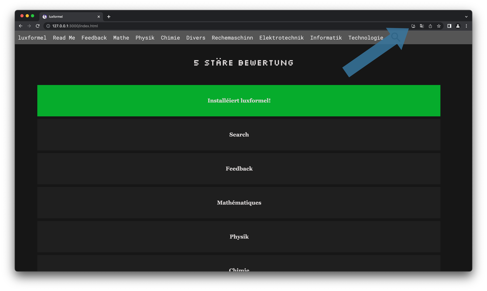

Wéi installéieren ech luxformel op engem Computer?
Luxformel ze installéieren ass ganz einfach! Dréckt einfach uewen op den Download-Knäppchen de bei ierch am Browser misst ugewise ginn. Ënnem am Bild ass gewisen wou sech de Knäppche verstoppt an engem Chrome Browser op engem Mac, mä all OS oder Computer misst mat der Method kompatibel sinn.

Wann der op den Download-Knäppchen gedréckt hutt misst eng
Dialog-Box opdauchen, déi ierch virschléit luxformel ze
installéieren. Dréckt op Install
.

D'luxformel PWA misst elo gedownload sinn. Dir kennt elo luxformel ouni Browser benotzen.